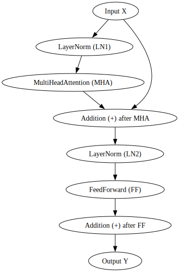

Step 11. Transformers - Block
class Block(nn.Module):
""" Transformer block: communication followed by computation """
def __init__(self, n_embd, n_head):
# n_embd: embedding dimension, n_head: the number of heads we'd like
super().__init__()
head_size = n_embd // n_head
self.sa = MultiHeadAttention(n_head, head_size)
self.ffwd = FeedFoward(n_embd)
self.ln1 = nn.LayerNorm(n_embd)
self.ln2 = nn.LayerNorm(n_embd)
def forward(self, x):
x = x + self.sa(self.ln1(x))
x = x + self.ffwd(self.ln2(x))
return xBlock

Code erklären
Der Transformer-Block, wie er hier definiert ist, kombiniert wichtige Prinzipien wie Multi-Head Attention, Feedforward-Netzwerke und Residual Connections mit Layer-Normalisierung, um die Lernfähigkeit in tiefen Netzwerkarchitekturen zu verbessern. Diese Struktur unterstützt effektiv das Lernen komplexer Abhängigkeiten in den Daten und ist besonders nützlich bei der Verarbeitung von Sequenzen, wo langreichweitige Abhängigkeiten von Bedeutung sind.